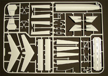

|

1/72 Airfix Vickers-Armstrongs 'Valiant'
Kit #11001
MSRP $66.95 $56.90 from Roll Models
Images and text Copyright © 2012 by Matt Swan
Developmental Background
The results of heavy aircraft saturation bombing after the Second World War basically convinced the RAF Bomber Command that this strategy would remain in practice for at least the immediate future in aerial warfare. Additionally, the introduction of heavy nuclear weapons required the continued development of four engine bombers as a delivery method. In 1947 the Air Ministry issued a specification for a four engine jet powered bomber to fill these perceived needs, three firms; A.V. Roe, Handley-Page and Vickers-Armstrongs submitted advanced designs for consideration. While not as advanced in design as the A.V. Roe and Handley-Page proposals the promise of rapid delivery won the Vickers-Armstrongs proposal precedence and was the first of the V bombers to become operational. The other two proposals were also accepted as back-up options should the first not be successful. These back-up developments would become the Victor and the Vulcan, the trio of bombers being the V series of the British strategic nuclear strike force.
The first prototype of the Valiant flew in 1951 with the second getting airborne in 1953. By 1955 the type was entering service with 138 Squadron as a nuclear deterrent. In 1956 a Valiant dropped the first British nuclear bomb as a test of air-drop procedures and concluded live nuclear bomb testing in 1958. The original concept was for these aircraft to act in the high altitude strategic bomber capacity however with advances in ground to air interception their role was revised to a more conventional low-altitude operation. Continuous low-level flight operations resulted in advanced stress on key structural components reducing the bombers operational lifespan. The Valiant saw conventional combat during the Anglo-French-Israeli Suez intervention in October and November 1956 dropping 1000 pound high explosive ordinance on Egyptian airfields. The type was used in the tanker role and for reconnaissance and countermeasure operations. Due to premature fatiguing and inter-crystalline corrosion in the main wing spars the type was retired from service by the end of 1964 after only 107 examples had been produced. Usage of any V series bomber as a weapons platform ended in 1982.
The Kit
With the introduction of this kit into the market now all three of the V series bombers are available to the modeling community. This kit arrives in a huge box on par with the 1/48 B-17 series from Monogram and once the lid is removed it becomes clear that this is absolutely necessary. The box is of good, sturdy construction so stash survivability is good and cover artwork is very nice. Inside we have a massive fuselage and several large sprues of parts all bagged with plenty of reference material thrown into the package as well.
All of the larger body parts, and there are a few of them, are molded from a mildly soft and uniformly tick polystyrene. Surface texture is smooth and detail is adequate. Panel lines are uniform but over-sized in both depth and width for the scale. Since the aircraft and model are so large this may be overlooked to a degree. Interior detail is fairly good in the cockpit area with crew positions for the flight personnel and the engineers. Instrument detail on all panels is provided by decals and the side access port may be built in the open position. Even so it seems unlikely that much of any of the interior cockpit detail will be visible when complete. The bomb bay can be built either open or closed and includes two optional loads. Overall detail down here is good. Optional under-wing tanks are provided and should the modeler wish to install these 3mm holes will need to be drilled prior to assembling the wing. The upper wing is a single large piece with flaps molded in place closed but with separate ailerons. The tail also features separate elevators.
The kit as received offers two nose options however we do have a third nose on the sprues so there may be alternative kits planned down the road. This kit also includes two options for main cockpit glazings, bomb aiming gondolas and tail cones. Take note that the secondary tail cone option does require some surgery. The thick plastic used in the wing and fuselage provide structural strength to the model so even though we have a very large item it is solid when complete. These larger parts also include some over-sized alignment pins and holes further boosting the structural strength issue. Clear parts display good clarity with lightly raised panel lines and have a good fit. Comparing the kit profile to scale drawings of the aircraft the central fuselage does display a small amount of elongation however this discrepancy is minor would not be noticed by the majority of modelers so ultimately is of little concern.

You may click on these small images to view larger pictures
Decals and Instructions
Kit instructions are as large as the model, we get a 22 page booklet of assembly instructions that include a variety of color call-outs by Humbrol paint numbers. Only 18 of those pages actually contain information, the balance is for construction notes. The last four pages cover marking and painting options for four aircraft. There are plenty of exploded view assembly steps and the whole thing makes construction seems fairly straight forward and easy to do. You can view a PDF file of these instructions here.
We get a massive sheet of decals covering the four aircraft mentioned a moment ago. We have options for two in anti-flash white (one of these features low-vis pink, white and blue roundels), one in bare metal and the final option in disruptive Medium Sea Grey and Dark Green over Gloss White. The decals show good print registry and color density. Airfix decals have a good history of reacting well with all common setting solutions.
Conclusions
Now all three of the V series bombers are available to the modeler in 1/72 scale, from Airfix this Valiant and the Vulcan and from Matchbox the Victor. This kit is without doubt the best engineered and has the best fit of all three in the series' most likely by virtue of being the last manufactured and benefiting from today's technology and market demands more than the other two. This is a nice kit with well-made parts that fit right, includes complete instructions and plenty of decals for the options offered. It's been on the market for over a year now and already there are a few nifty add-on options available. From Airfix we have a Photo-Reconnaissance and Refueling conversion kit, from Eduard are several photo etched sets and a laser cut mask set. Frieghtdog and Airdecal both offer some alternative marking options and Alley Cat has multiple resin upgrades available. With these various options available to the modeler virtually and unit or type could be built. I give this kit a very good recommendation and suggest any fan of British air-power or cold war models have at least one in their collection.
|


{kind=link}
{kind=link}
{kind=link}
{kind=link}
{kind=link}
{kind=link}
{kind=link}